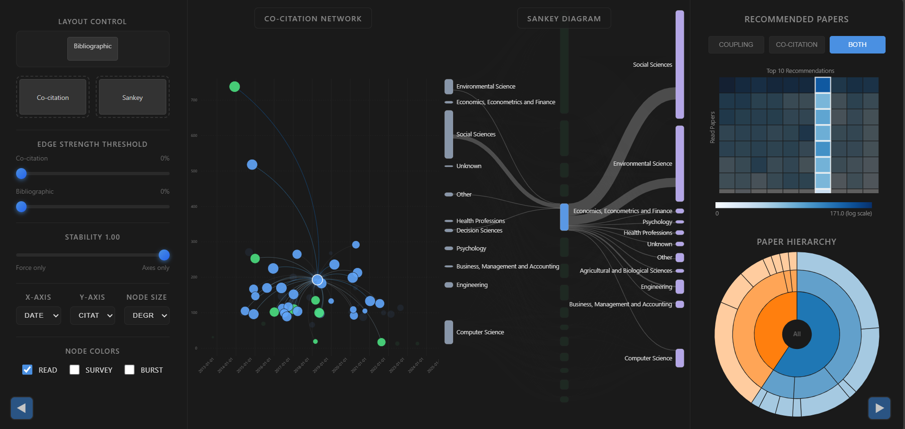
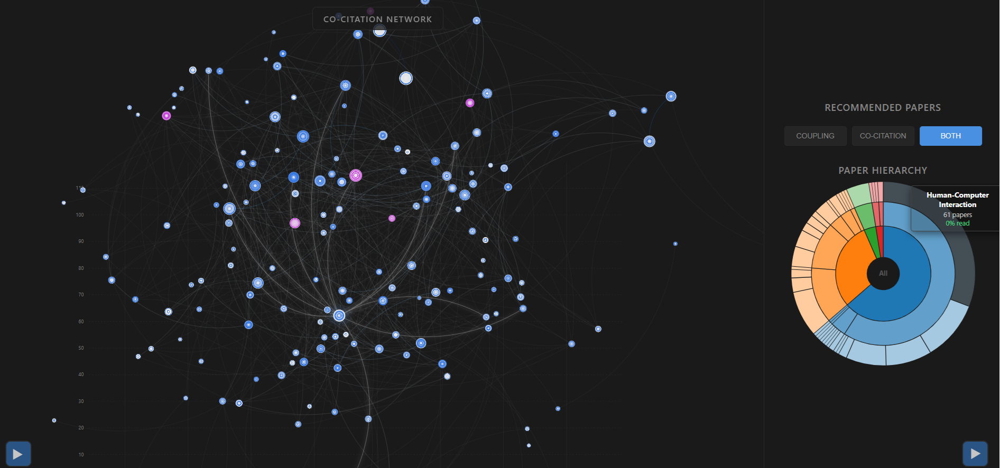

Co-citation
Two papers are linked when later publications cite them together, revealing how a research community groups earlier work over time.
2025 · Information visualization
An exploratory and interactive literature review system revealing shared foundations, topic bridges, citation flows, and which papers may be worth reading next. Using the OpenAlex categorization we can see what school of thoughts a paper is used in their references and what type of papers are citing them, represeting the flow of knowledge in the sankey diagram.

The project begins with 59 papers collected for research on public participatory design. A reproducible Python pipeline resolves their DOIs through OpenAlex, gathers metadata and references, then derives weighted co-citation and bibliographic-coupling graphs for the browser application.
Then the D3.js interface will present a scatterplot as a force-directed network. A stability control continuously blends those layouts, allowing users to expose clusters without losing the meaning of axes such as publication date, citation count, field-weighted impact, or research field.
Selection is coordinated across the network, a Sankey view of cited and citing fields, a heatmap that ranks unread papers against the user’s reading history, and a radial hierarchy of domain, field, and subfield. Together, the views support exploratory search rather than presenting another flat bibliography.
View source on GitHubNetwork logic
Two papers are linked when later publications cite them together, revealing how a research community groups earlier work over time.
Two papers are linked when they share references, revealing common intellectual foundations at the time they were published.
